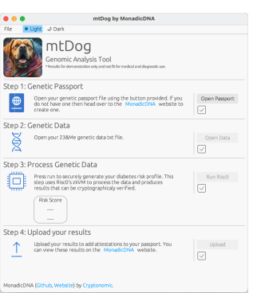
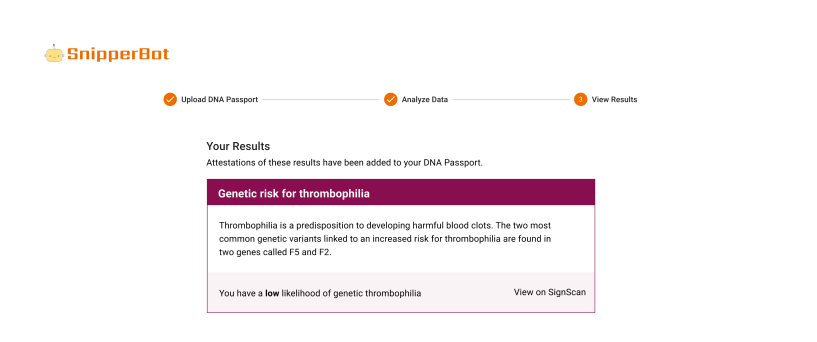

Monadic DNA
Originally conceived at the Scaling Ethereum 2004 hackathon, Monadic DNA demonstrates a privacy-preserving alternative for personal genomics using confidential computation (using MPC) and verifiable computation (using ZK). The project was the overall winner of the hackathon and received several sponsor prizes. Work is actively underway to bring Monadic DNA to full production.
Links


